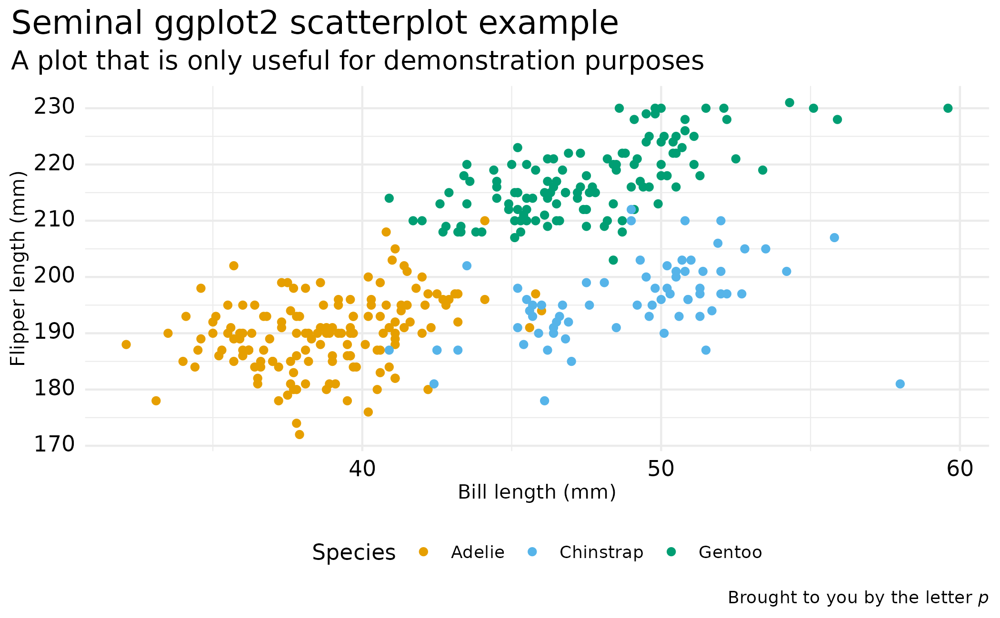

Based on ggplot2::theme_minimal().
base font size, given in pts.
base font family
font family for titles and headers. The default, NULL,
uses theme inheritance to set the font. This setting affects axis titles,
legend titles, the plot title and tag text.
base size for line elements
base size for rect elements
colour for foreground, background, and accented elements respectively.
A character vector of valid colors that will be interpolated into a continuous color scale.
A character vector of colors to use for discrete color scales.
Logical indicator for whether the background of the plot should be transparent.
Additional parameters passed to ggplot2::theme().
A theme object that can be added to a ggplot2::ggplot().
library(ggplot2)
ggplot(penguins, aes(x = bill_len, y = flipper_len)) +
geom_point(aes(color = species), na.rm = TRUE) +
labs(
x = "Bill length (mm)",
y = "Flipper length (mm)",
title = "Seminal ggplot2 scatterplot example",
subtitle = "A plot that is only useful for demonstration purposes",
caption = "Brought to you by the letter *p*",
color = "Species"
) +
theme_atlas(base_family = "sans")
